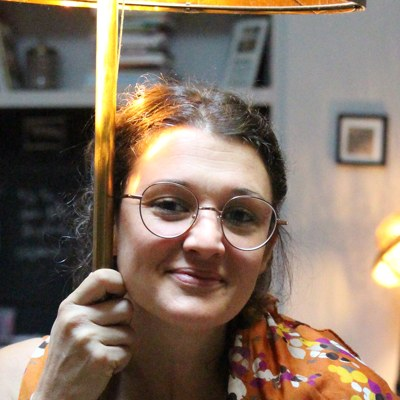
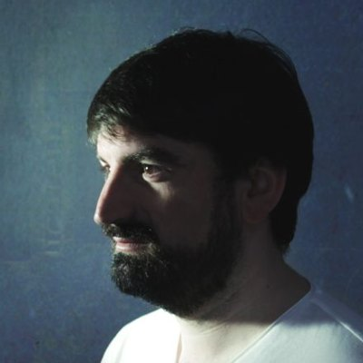
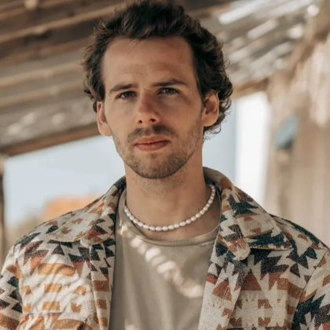
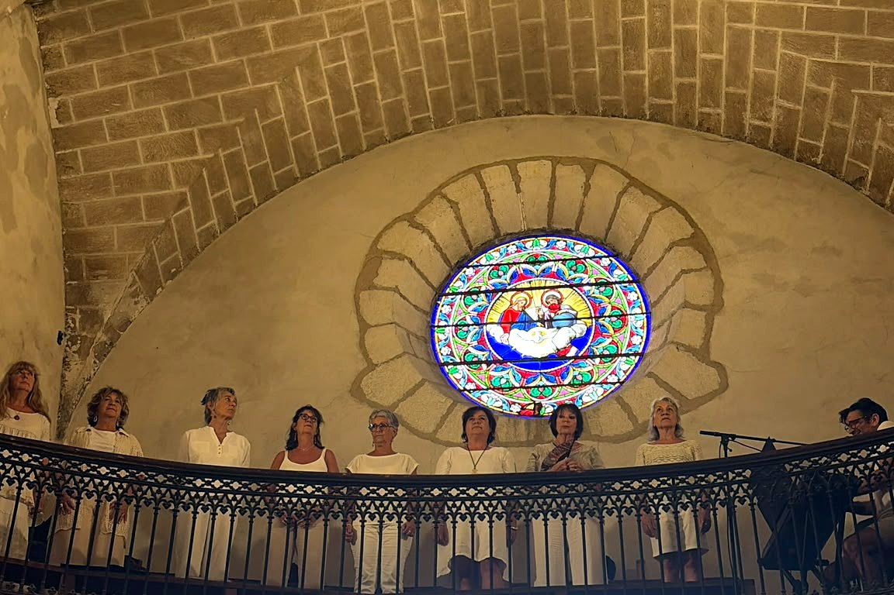

Le collectif
Il est 22h13
C'est l'heure où la maison s'apaise. Où Lou s'endort. Où la journée se replie sur elle-même et où, dans le silence, quelque chose remonte : une mélodie, un vers, un geste qu'on n'a pas eu le temps de poser.
Le Collectif 22h13min est né de cette heure-là. De ce moment précis où, une fois l'enfant couchée, 2 artistes se retrouvent et travaillent. Composent. Écrivent. Imaginent.
Nous sommes Amélie et Samuel Zaroukian, comédienne et metteuse en scène, compositeur et chef de chœur. Nous vivons à Cournonterral. Nous avons une fille, Lou, qui danse et qui nous a appris l'essentiel : qu'il y a une heure pour tout, et que la nuit n'est pas le contraire du jour, c'est sa profondeur.
De cette heure sont nés 4 projets :
- Cotonn, notre duo intimiste : chanson à texte, concerts en petites jauges. Né à la naissance de Lou.
- Les Murmures de Lou, ensemble vocal en polyphonie sur des poèmes de Baudelaire, Verlaine et Emily Dickinson mis en musique par Samuel, et bientôt son requiem, Soleil noir. Pour églises et chapelles.
- En chemin, Milo, théâtre d'objets pour les tout-petits. Né pendant le confinement, pour Lou. Local et de saison, comme on cuisine.
- [Re]trace, visites théâtralisées du patrimoine, sur mesure, avec notre complice Tom Poignon. Mèze, Cournonterral, Poussan, bientôt chez vous. Là où les habitants ne sont plus spectateurs de leur territoire, mais en deviennent les voix.
Nous croyons à l'art proche, fait maison, exigeant. À la culture qui pousse dans la ruralité comme un bon légume, avec du temps, du soin, et le territoire dedans.
Bienvenue. On vous attend.
L'équipe
À la tête du collectif

Amélie Zaroukian
Comédienne · metteuse en scène · autrice · mezzo-soprano
Chanteuse, comédienne et metteuse en scène, guide du patrimoine et médiatrice culturelle dans l'Hérault.
Découvrir →
Samuel Zaroukian
Compositeur · pianiste · baryton
Chef de chœur depuis 30 ans, professeur de chant au Conservatoire de Montpellier, il écrit la musique des créations du collectif.
Découvrir →Ils nous accompagnent
Artistes associés

Tom Poignon
Comédien · metteur en scène · auteur
Formé à l'École nationale supérieure d'art dramatique de Montpellier, Tom Poignon partage son travail entre la scène et les plateaux de tournage. Il a écrit Ravages (2022), adapté et mis en scène Le Petit Prince ou le Sociable insatisfait, et imagine des formes immersives et déambulatoires. Il enseigne le théâtre dans l'Hérault depuis plus de 7 ans et accompagne les interprètes en coaching.
Dans [Re]trace, écrit par Amélie Zaroukian, il joue Charles-Henry, aux côtés de Véro.
Corinne Gomez · Gom's
Plasticienne · vidéaste
Corinne Gomez, sous le nom d'artiste Gom's, est plasticienne et vidéaste. C'est elle qui réalise les teasers du collectif : En chemin, Milo, [Re]trace, Cotonn.

L'ensemble vocal
Les Murmures de Lou
Ensemble vocal de femmes fondé en 2025 par Samuel Zaroukian pour chanter ses créations. Il porte le requiem Soleil noir et répète au temple de Cournonsec, où il a donné son premier concert en juillet 2026.